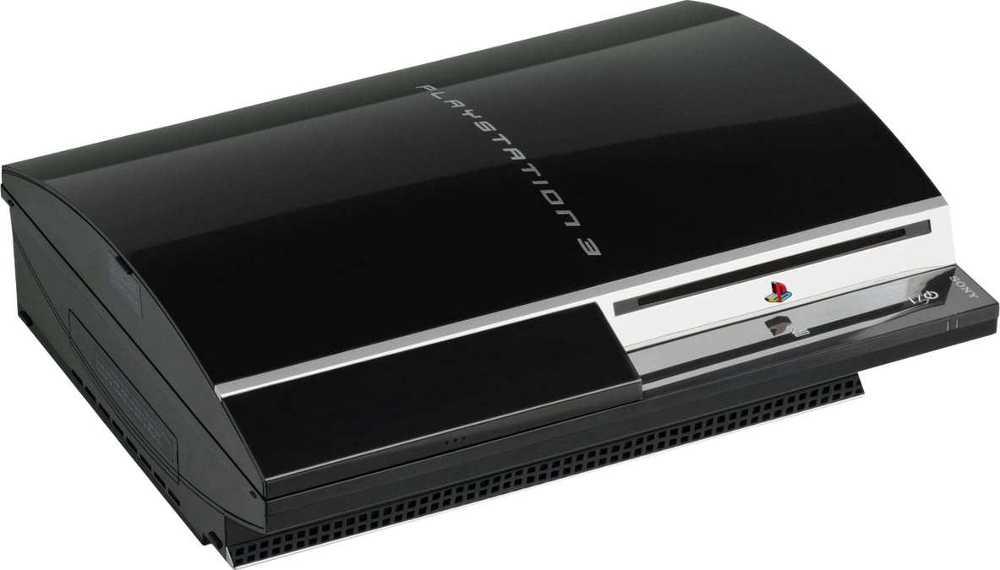
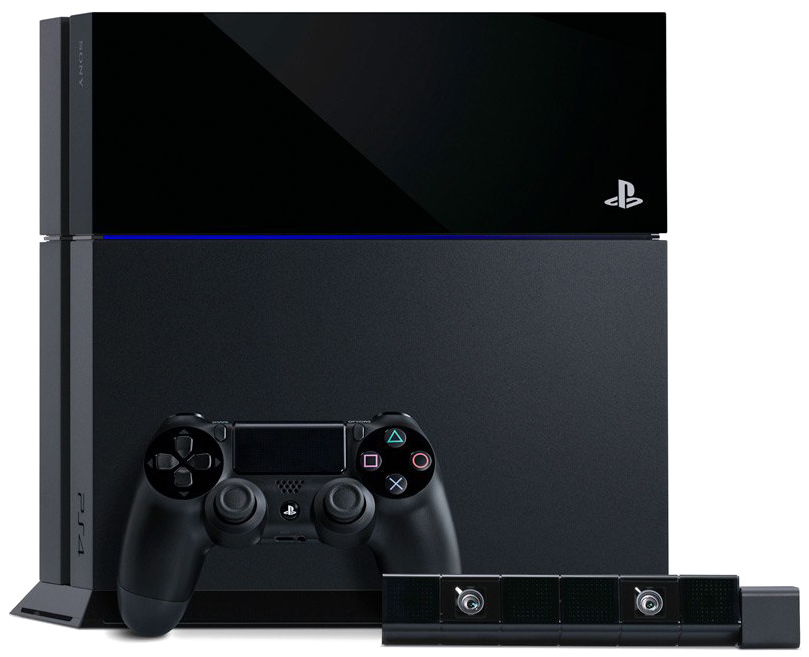

Journey
of
the
Consoles
PlayStation 1; Where It All Began

The original PS1 first released on December 3rd, 1994, in Japan and worldwide on September 9th, 1995, and had been Sony's first entry point into the gaming industry, but did you know that PlayStation console came to be because of Nintendo developers? The PlayStation 1 was the result of a failed collaboration between Sony and Nintendo during the 1990s.
Before Sony decided to plan their own console, they were set to develop a CD-ROM add-on for Nintendo, but due to reasons, their partnership did not last, and Sony had made the decision to move forward with making their own console with new technological advancements that would change the gaming industry forever. With the help of third-party developers from Nintendo, who had left because of the hardware limitations, Sony was able to produce the first CD-ROM games for the PlayStation console.
In terms of hardware, the PlayStation 1 was a huge success and a significant leap forward in innovation technologies in gaming history. It had 2 mb of RAM, its GPU had supported 3d polygon rendering, which allowed for beautiful graphics and immersive environments for the era it was in. Additionally, its ability to handle full-motion video (FMV) sequences opened new possibilities for cinematic storytelling in games.

Some of the most popular games that took advantage of these technological innovations were games like Final Fantasy VII, a game that redefined the Role-Playing genre (RPG) thanks to its deep narrative and use of FMV cutscenes; Metal Gear Solid, which introduced players to stealth-based gameplay and intricate storytelling; and Gran Turismo, a racing game known for its realism and attention to detail. There are other notable titles that helped this console, which you can find more about on our “Best Games” page.
With the combination of technological leaps in hardware, immersive and groundbreaking graphics, and a phenomenal line up of games, the PlayStation 1 changed and shaped the whole gaming industry into a better landscape, laying the foundation of Sony's success in the console market.
PlayStation 2; The Pinnacle of Consoles

With the huge success of the PlayStation 1, it only makes sense that Sony would continue the PlayStation line-up, and oh boy did they do just that. In 2000, Sony launched their very next game console, the PS2. By this time, Sony had already firmly established itself as a major platform in the gaming industry and showed other consoles how it's done. Building on its predecessor's legacy, the PS2 aimed to not only advance gaming technology but also serve as an entertainment hub. A major selling point of the PlayStation 2 was its ability to play DVDs, which, in 2000, was still a relatively new home media format. This dual function as both a gaming console and a DVD player helped the PS2 stand out, attracting both gamers and general consumers looking for a cost-effective entertainment system. Honestly, most would say that it was thanks to the DVD format that most homes would have this gaming console, even if your family didn't play games or know anything about them, they would've had this console for the ability to play their DVDs with it.
Looking at the specs of the PlayStation 2, it was a significant upgrade from the PlayStation 1. It featured 32 mb of RAM, which is massive compared to the PS1's 2 mb of RAM. Its custom Graphics Synthesizer allowed for complex 3D environments and smooth, detailed animations, capable of rendering 75 million polygons per second. The hardware of the PS2 made it the most powerful console of its time, allowing developers more creativity in making more intricate and immersive worlds.
Also, the console used backwards-compatibility, which means the PS2 could play PS1 games, letting players continue playing their old library of games, giving it a nice appeal to players.
The PS2 is the Best-Selling console to ever be made in the gaming industry, with 155 million units sold, going outside of just the PlayStation and towering over other game companies like Nintendo's consoles and Xbox's. It had a plethora of games to choose from, such as Grand Theft Auto: San Andreas, which offered a massive open world and a complex storyline; Final Fantasy X, known for its immersive story and graphical leap; and Metal Gear Solid 2: Sons of Liberty, which pushed the boundaries of interactive storytelling and cinematic gameplay. Gran Turismo 3, God of War, and Shadow of the Colossus were also standout titles that showcased the console's power and ability to deliver unforgettable gaming experiences.
PlayStation 3; A Disasterous Launch
On November 11th, 2006, the PlayStation 3 had released in Japan, then worldwide on November 17th of the same year. This was the most controversial release of Sony's gaming consoles, as many had seen it to be overpriced for the time it came out. The PS3 was going for $499 with the regular model of 20gb storage and a whopping $599 for the 60gb storage model. Because of the prices, many potential buyers were alienated from the purchase of this console. Additionally, its complex architecture made it difficult for developers to optimize games, leading to performance issues and delayed game releases, especially when compared to its main competitor, the Xbox 360, which had a year's head start on the market.
The PlayStation 3's launch was rocky, marked by production delays, high costs, and initial criticism for its lackluster lineup of exclusive games. However, as time went on, the PS3 slowly gained traction, particularly after Sony introduced multiple price cuts and released a slimmer, more energy-efficient version of the console. The PlayStation Network (PSN) also played a crucial role in the PS3's revival, allowing players to access online multiplayer and downloadable games, even though it lagged Xbox Live in terms of features early on. By the end of its life cycle, the PS3 had sold over 87 million units worldwide— a respectable number, though it never quite achieved the same dominance as the PS2.
The hardware inside the PlayStation 3 was impressive for its time, although it came with its challenges. The PS3 was powered by a 3.2 GHz Cell Broadband Engine, which consisted of a Power Processing Element and seven Synergistic Processing Elements (SPEs) that could perform multiple tasks simultaneously. It also had 256 MB of XDR DRAM and 256 MB of GDDR3 VRAM, allowing it to handle graphically intensive games. Its custom NVIDIA RSX "Reality Synthesizer" GPU supported 1080p resolution and advanced visual effects, making the PS3 a graphical powerhouse. The inclusion of a Blu-ray player was a key selling point, giving the console an edge in multimedia capabilities. However, the complexity of the Cell processor made it difficult for developers to unlock the console's full potential early on.
Even with all the PS3's struggles, it still had some of the best and most loved games during its time, such as Uncharted 2: Among Thieves and Uncharted 3: Drake's Deception, which stood out for their rich storytelling and immersive visuals. The Last of Us, which is one of the most iconic games of its generation, even still being talked about today, especially with the release of the show in 2023, reaching even wider audiences. Other standout titles included Metal Gear Solid 4: Guns of the Patriots, which was praised for its deep narrative, God of War III with its massive scale and intense action, and Gran Turismo 5
The PlayStation 3's journey was one of redemption. Initially criticized for its high price, complex architecture, and lack of compelling exclusives, the PS3 overcame its early controversies through perseverance, a rich library of games, and Sony's dedication to improving the user experience. By the end of its lifecycle, the PS3 had cemented its place as a pivotal console in gaming history, setting the stage for the PlayStation 4's smoother and more successful launch.
PlayStation 4; Sony's Redemption
In November of 2013, the PlayStation 4 was launched in North America. After the major setbacks caused by the hardware of the PS3, Sony designed the PS4 to better focus on simplicity, power, and affordability. Compared to the complexity of the Cell architecture of the PS3, the PS4 had went with a more familiar architecture for game developers, allowing for performance to excel across many game titles. This had helped Sony get a leg-up back into the gaming industry not only for developers, but for the consumers as well.
Looking at its specs, the PS4 used a 8-core AMD CPU, 8gb of RAM, and Radeon-based graphics for the GPU. This gave the ability to render complex 3D graphics and handles 1080p resolution for most games.
The PS4 was a huge commercial success, as it had sold well over 117 million units towards the end of its lifecycle, giving it a good reputation among the gaming industry. It had a easier launch price than the PS3, with it being $399, one hundred dollars cheaper than its predecessor. In time, the PS4 had quickly overcame the Xbox One, which had a failed marketing campaign and had a higher selling price, turning consumers more towards the PS4. In this time, Sony dived more into exclusivity, helping the wide catalogue of PS4 games that it had to offer.
Some of the most popular games this console had to offer were:
- The Witcher 3 Wild Hunt and Red Dead Redemption 2, which were two massive open-world titles that pushed the limits of the console's capabilities with their detailed environments and storytelling.
- 4: A Thief's End and The Last of Us Part II, developed by Naughty Dog, set new standards for narrative-driven gameplay and graphical fidelity, becoming benchmarks for cinematic experiences in gaming.
- God of War (2018) rebooted the classic franchise with a more mature story and stunning visuals, while Horizon Zero Dawn introduced players to a unique, post-apocalyptic world filled with robotic creatures.
- Spider-Man (2018) captured the feeling of superhero action with fluid web-swinging mechanics and a well-crafted story.

With the success of the PS4, it helped to cement Sony's position back in the gaming industry.
PlayStation 5; Graphics PowerHouse

In November of 2020, the PS5 launched globally at a price of $499, making it the current console of this generation (as of 2024). The PS5 is the most technologically advanced PlayStation console to date. In its marketing campaign, it boasted faster load times, thanks to the power of SSD, better graphics with the introduction of raytracing, and vast more experiences. However; it suffered from one main issue at its launch, and that was the significant supply shortages during the Corona-virus pandemic.
Due to the supply shortages, it was very difficult for consumers to even get their hands on this console, as it sold out almost immediately when it was open for its pre-orders. It was not clear when Sony would have the ability to restock the PS5, so there were many who were left without the console for months, and the only actual way to get one was to buy from a scalper, which usually they sell the console for almost double the price.
In terms of hardware, the PS5 holds a 8-core AMD Zen 2 processor clocked at 3.5 GHz, paired with a custom AMD RDNA 2-based GPU that delivers 10.28 teraflops of power, allowing for stunning 4K gaming at high frame rates. The console comes with 16 GB of GDDR6 RAM and an ultra-fast 825 GB SSD, which revolutionized gaming with near-instantaneous loading times. With the addition of ray tracing, the environment was brought out to look more realistic and very immersive for game worlds. The PS5 is even capable of supporting a resolution of 4k at up to 120 frames per second; however, most games on the PS5 don't optimize for that framerate, usually only going up to 60 frames per second.
With the inclusion of the new DualSense controller, it became one of the most remarkable features of the PS5. Having the controller come with haptic feedback and adaptive triggers gave a more immersive experience in video games.